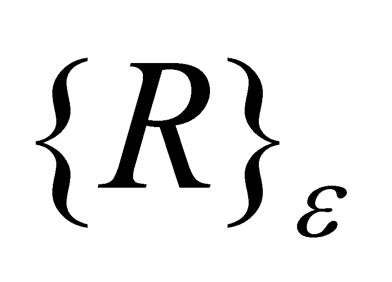

|
|
|
Most of the definitions assigned to the “set” notion from mathematics are using the term “object”, but without defining it, counting on the definitions found in dictionaries. The object is even the basic element of a set, and its rigorous definition cannot be made without taking into account the basic “mechanisms” of the information processing within the biotic IPS, whose role is (among others) even to separate (distinguish) the objects with a simultaneous existence one from another. Therefore, a generic definition of the object may be provided only by understanding the operation of the biotic IPS (that is the central nervous system, in case of the humans) because it (the biotic IPS) is “guilty” for the wide-scale utilization of the objects, in total disagreement with the natural abiotic material systems, for which the external world is made-up from a single object, placed along the direction of the unique resultant of the same type fields (as it was mentioned in chapter 8).
The detailed definition and classification of the objects is made since back to chapter 3, but we are momentarily interested in one of the basic properties of this notion - distinguishability - which is the property of an object to be differentiated from the other objects with a simultaneous existence. This property is based on the existence of a perceptible difference found by an IPS between the properties of the aimed object (comparison reference) and the other surrounding objects, the difference which in this paper is also named contrast, which allows the separation (discrimination) of the reference object against the rest of the objects from the set.
In case of a set of numbers,
each object (obviously, abstract) from this information structure (a
complex object), with the internal domain symbolically limited by a
pair of brackets {}, is characterized by two properties: a
qualitative one (the element’s position into the set)
and a quantitative one (numerical value). For reaching the
distinguishable status, any of the set objects must have an unique
qualitative attribute. In case of the ordered sets, there is an
interrelation between the qualitative (position) and the quantitative
attribute (numerical value), otherwise speaking, a qualitative and a
quantitative difference shall also exist between two adjacent
(successive) objects of the set. This situation is altered in case of
the ordered but continuous sets of numbers; in such
circumstances, by means of an excessive abstraction (we might even
call it abusive), a logical contradiction (absurdity) is reached,
because at the limit point, in case of an infinity of objects whose
numerical values are ranging within a finite interval, the adjacent
objects become undistinguishable one from another (the difference
between the numerical values of two objects tends to zero). Due to
this reason, the present paper limits the abstraction degree to
acceptable values by introducing the realizable set
as
an ordered set of the abstract realizable numbers, in which
each element may be distinguished from the adjacent ones by means of
the minimum quantitative contrast
 ,
however much less it is, but always different from zero. Thus, the
set of real numbers, as it is defined by the mathematics rules, shall
be kept for the ones which would intend to operate with it, although,
according to the objectual philosophy, this set is considered as a
virtual object. This fact has few important consequences:
,
however much less it is, but always different from zero. Thus, the
set of real numbers, as it is defined by the mathematics rules, shall
be kept for the ones which would intend to operate with it, although,
according to the objectual philosophy, this set is considered as a
virtual object. This fact has few important consequences:
The amount of digits of a number belonging to the realizable set shall be always a finite one, and the associated singular numerical value is a normal value;
A finite interval from the realizable set shall contain a finite number of distinct normal numerical values;
The realizable set is a discrete rather than a continuous set;
The geometric equivalent of a
singular value on the realizable axis
is not a dimensionless point anymore but a point with a dimension
 ,
which in this paper is named dimensional point (DP).
,
which in this paper is named dimensional point (DP).
By means of idealization (by reducing the non determination range to zero), starting from this realizable set of numbers, the virtual set from mathematics can be reached.
Copyright © 2006-2011 Aurel Rusu. All rights reserved.